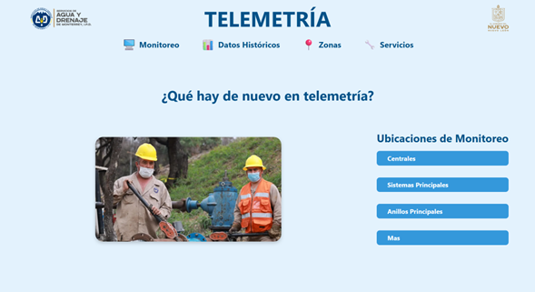
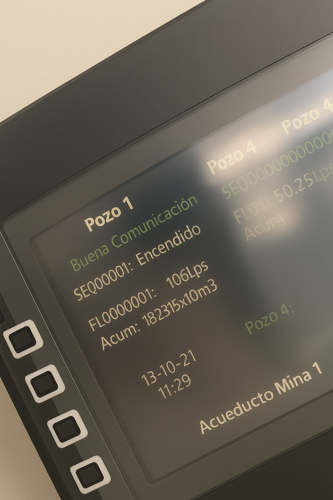

¿QUÉ HAY DE NUEVO EN TELEMETRÍA?
BIENVENIDOS A ESTA PEQUEÑA MUESTRA DE LOS MÚLTIPLES SERVICIOS QUE PRESTA EL DEPTO. DE TELEMETRÍA
Menú de inicio telemetría
Telemetría cuenta con una página de inicio donde muestra las diferentes zonas en las que se puede observar la información obtenida de los distintos servicios que se ofrecen.
• Visualización clara y animada de cada zona.
• Acceso directo a módulos de monitoreo.
• Diseño accesible para todos los usuarios.
El menú de inicio muestra de manera amigable y animada cada zona.
Mantenimiento sistema de telemetría - Bombeo Mina
Para una rápida reacción, la fuente de abasto de pozos profundos de Mina cuenta con una pantalla táctil HMI donde se monitorea el estado de los equipos y los gastos en tiempo real.
Ubicación:
Oficina de Operadores
Mina N.L.
Mantenimiento sistema de telemetría - Doc. Arroyo y Mier y Noriega


El departamento de telemetría dio mantenimiento al sistema de monitoreo de Doc. Arroyo y Mier y Noriega, manteniendo altos estándares para evitar riesgos y recorridos largos.
Ubicación:
Tanque Elevado y Repetidor Mier y Noriega
Doc. Arroyo N.L.
Revisión de equipo en Tanque Elevado - Mier y Noriega

Verificación del sistema de monitoreo en tanque elevado y tablero de control, asegurando operación continua.
Ubicación:
Tanque Elevado y Tablero Eléctrico
Mier y Noriega, N.L.

Instalacion de Sistema Autónomo
Sistema de telemetría autónomo alimentado por batería y celda solar en poste de concreto de 8.5 m para evitar vandalismo.
Ubicación:
Tanque Capellanía II
García, Nuevo León

Actualización y Expansión de Telemetría
Mejora de sistemas existentes y nuevos puntos estratégicos para monitoreo en Doc. Arroyo y Mier y Noriega ante la crisis de agua.
Ubicación:
Repetidor Pozo del Desierto
Doc. Arroyo, N.L.

Módulos de Adquisición de Datos
Instalación de módulos y conexión a PLC con acceso remoto desde oficinas para control y monitoreo sin traslados.

Instalación de Punto Remoto
Montaje de equipo solar en poste en sitio remoto. Riesgos laborales justificados por trabajo en altura.

Uso de Telemetría en Smartphone
Consulta de datos de telemetría en tiempo real desde celulares por usuarios y operadores.

Control de Equipos de Bombeo
Automatización con PLCs para controlar arrancadores y variadores según necesidades del sistema.